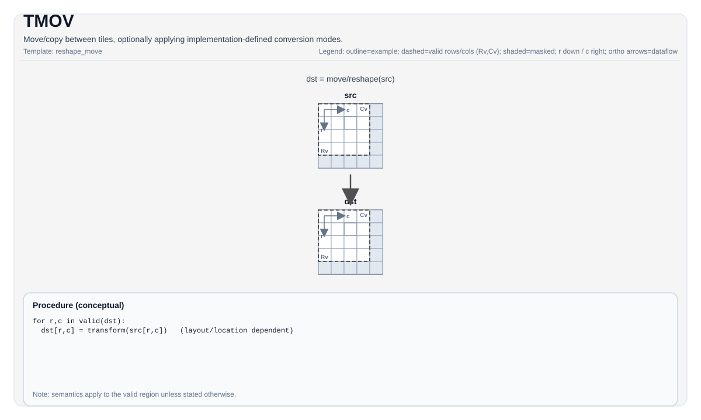

TMOV¶
Tile Operation Diagram¶

Introduction¶
Move/copy between tiles, optionally applying implementation-defined conversion modes selected by template parameters and overloads.
TMOV is used for:
- Vec -> Vec moves
- Mat -> Left/Right/Bias/Scaling/Scale(Microscaling) moves (target-dependent)
- Acc -> Mat/Vec moves (target-dependent)
Math Interpretation¶
Conceptually copies or transforms elements from src into dst over the valid region. Exact transformation depends on the selected mode and target.
For the pure copy case:
ND → NZ (data repack for the Cube Unit)¶
The Cube Unit consumes operands in NZ (Normal-ZigZag) fractal format: the tile is
tiled into C0 × C0 fractals, each fractal stored with BLayout = ColMajor (the "N" —
column-major outer blocks) and SLayout = RowMajor (the "Z" — row-major within each
fractal). TMOV(dstNZ, src) repacks a RowMajor Vec/Mat tile (NoneBox) into this
NZ layout. No tmp is required.
| Operand (GM/L1 side) | BLayout |
SLayout |
Meaning |
|---|---|---|---|
| Left (A, NT) | ColMajor |
RowMajor |
normal NZ |
| Right (B, NT) | RowMajor |
ColMajor |
transposed NZ |
A CompactMode::RowPlusOne destination (Rows = Vec_S0 + 1) is the canonical idiom to
avoid UB bank conflicts on the vsstb scatter.
ND → ZN (within-fractal transpose for the transposed Cube operand)¶
The Right (B, NT) operand is the transpose of NZ: BLayout = RowMajor (the "Z" —
row-major outer blocks) and SLayout = ColMajor (the "N" — column-major within each
fractal). TMOV(dstZN, src) repacks a RowMajor Vec tile (NoneBox) of shape [K, N]
into ZN layout [K/K0, N/16, 16, K0], where \(K_0 = 32\text{B}/\mathrm{sizeof}(T)\)
(so \(K_0 = 32\) for B8, \(16\) for B16, \(8\) for B32). Requires \(K \bmod K_0 = 0\) and
\(N \bmod 16 = 0\). Supported element types: half, bfloat16_t, float, int32_t,
int8_t, uint8_t, float8_e4m3_t, float8_e5m2_t, hifloat8_t,
float4_e2m1x2_t, float4_e1m2x2_t (all 1/2/4-byte storage types).
Unlike ND→NZ (which only rearranges 32 B blocks on the block grid via vsstb and leaves
within-block data untouched), ND→ZN must also transpose the elements inside each
\(K_0 \times 16\) fractal, so vsstb alone is insufficient. Each output fractal is the
transpose of a \(K_0 \times 16\) source slice:
The implementation uses a vgather2 whose index decomposes the destination position \(d\)
into the source coordinates \((i, j)\). With the destination fractal laid out \([16, K_0]\)
row-major (\(j\) outer, \(i\) inner):
The \((i, j)\) extraction uses pow2 shifts/masks (no div/mod); the \(i \cdot N\) term uses
vmuls because \(N\) is generally not a power of two. No vdiv appears anywhere. No tmp
is required (the 2-arg TMOV(dst, src) form dispatches here when the destination is
RowMajor + ColMajor).
Element-width handling. A fractal is \(K_0 \cdot 16\) elements = 512 B for every dtype.
For B16/B32 the gather indexes in units of T (one VL holds 128/64 T-elements), so a
fractal takes 2 gathers stored with DIST_NORM. For B8 the gather reads VL/2 = 128 byte
indexes, each result zero-extended into a B16 lane (vector_u16 dst, uint8_t* src);
a fractal takes 4 gathers stored with PK_B16 to pack the 128 B16 lanes back to 128
bytes. This is the same primitive TTransB8 uses for its element-wise B8 transpose
(its golden is a plain .transpose(1,0)), so the B8 path is an element-wise transpose,
not a pair transpose.
X → ZZ (microscaling exponent repack)¶
For MXFP8/MXFP4 matmuls the per-group E8M0 exponents must reach the Cube's scale operand
in ZZ format: a [16,2] box (32 B = 16 columns × 2 row-groups), linearised so that
the Cube reads one box per fractal column-pair. Two variants:
ND → ZZ (grp_axis = 1, default): source exponents are ND-grouped (axis-1).
with \(r_b \in [0, R/16)\), \(c \in [0, C/2)\), \(q \in [0,2)\), \(\delta \in [0,16)\).
DN → ZZ (grp_axis = 0): source exponents are DN-grouped (axis-0). Equivalently
transpose then ND→ZZ:
with \(c_b \in [0, N/16)\), \(p \in [0, \hat M/2)\), \(q \in [0,16)\), \(\delta \in \{0,1\}\), \(\hat M = M/32\).
For fixed \((c_b, p)\) the 32 B of the ZZ box come from two contiguous 16-B source runs
(\(E_{DN}[2p]\) and \(E_{DN}[2p+1]\)); DN→ZZ therefore uses contiguous loads + vintlv
(cheaper than ND→ZZ's vgather2).
Role of the tmp tile¶
Only the X→ZZ transforms take a tmp operand (the 3-arg overload). ND→ZZ uses it as
the vgather2 index buffer; DN→ZZ accepts it for interface parity but does not access it
(the vsstb scatter needs no scratch). ND→NZ has no tmp.
Assembly Syntax¶
The PTO AS design recommends splitting TMOV into a family of ops:
%left = tmov.m2l %mat : !pto.tile<...> -> !pto.tile<...>
%right = tmov.m2r %mat : !pto.tile<...> -> !pto.tile<...>
%bias = tmov.m2b %mat : !pto.tile<...> -> !pto.tile<...>
%scale = tmov.m2s %mat : !pto.tile<...> -> !pto.tile<...>
%vec = tmov.a2v %acc : !pto.tile<...> -> !pto.tile<...>
%v1 = tmov.v2v %v0 : !pto.tile<...> -> !pto.tile<...>AS Level 1 (SSA)¶
%dst = pto.tmov.s2d %src : !pto.tile<...> -> !pto.tile<...>AS Level 2 (DPS)¶
pto.tmov ins(%src : !pto.tile_buf<...>) outs(%dst : !pto.tile_buf<...>)C++ Intrinsic¶
Declared in include/pto/common/pto_instr.hpp and include/pto/common/constants.hpp:
template <typename DstTileData, typename SrcTileData, typename... WaitEvents>
PTO_INST RecordEvent TMOV(DstTileData &dst, SrcTileData &src, WaitEvents &... events);
template <typename DstTileData, typename SrcTileData, ReluPreMode reluMode, typename... WaitEvents>
PTO_INST RecordEvent TMOV(DstTileData &dst, SrcTileData &src, WaitEvents &... events);
template <typename DstTileData, typename SrcTileData, AccToVecMode mode, ReluPreMode reluMode = ReluPreMode::NoRelu,
typename... WaitEvents>
PTO_INST RecordEvent TMOV(DstTileData &dst, SrcTileData &src, WaitEvents &... events);
template <typename DstTileData, typename SrcTileData, typename FpTileData, AccToVecMode mode,
ReluPreMode reluMode = ReluPreMode::NoRelu, typename... WaitEvents>
PTO_INST RecordEvent TMOV(DstTileData &dst, SrcTileData &src, FpTileData &fp, WaitEvents &... events);
template <typename DstTileData, typename SrcTileData, ReluPreMode reluMode = ReluPreMode::NoRelu,
typename... WaitEvents>
PTO_INST RecordEvent TMOV(DstTileData &dst, SrcTileData &src, uint64_t preQuantScalar, WaitEvents &... events);
template <typename DstTileData, typename SrcTileData, AccToVecMode mode, ReluPreMode reluMode = ReluPreMode::NoRelu,
typename... WaitEvents>
PTO_INST RecordEvent TMOV(DstTileData &dst, SrcTileData &src, uint64_t preQuantScalar, WaitEvents &... events);ND → NZ / X → ZZ overloads¶
// ND -> NZ (2-arg, no tmp)
template <typename DstTileData, typename SrcTileData, typename... WaitEvents>
PTO_INST RecordEvent TMOV(DstTileData &dst, SrcTileData &src, WaitEvents &...events);
// X -> ZZ (3-arg, with tmp). grp_axis=1 (default) = ND->ZZ; grp_axis=0 = DN->ZZ.
template <typename DstTileData, typename SrcTileData, typename TmpTileData, typename... WaitEvents,
std::enable_if_t<is_tile_data_v<TmpTileData>, int> = 0>
PTO_INST RecordEvent TMOV(DstTileData &dst, SrcTileData &src, TmpTileData &tmp, WaitEvents &...events);
template <int grp_axis, typename DstTileData, typename SrcTileData, typename TmpTileData, typename... WaitEvents,
std::enable_if_t<is_tile_data_v<TmpTileData>, int> = 0>
PTO_INST RecordEvent TMOV(DstTileData &dst, SrcTileData &src, TmpTileData &tmp, WaitEvents &...events);| Overload | grp_axis |
Transform | tmp used? |
|---|---|---|---|
TMOV(dst, src) |
— | ND → NZ | no |
TMOV(dst, src, tmp) |
1 (default) | ND → ZZ | yes (vgather2 index buffer) |
TMOV<0>(dst, src, tmp) |
0 | DN → ZZ | no (accepted for parity) |
Constraints¶
General constraints / checks¶
TMOVhas these overload families:- plain move:
TMOV(dst, src) - relu form:
TMOV<..., reluMode>(dst, src) - accumulator-to-vector form:
TMOV<..., mode, reluMode>(dst, src) - vector-quant form:
TMOV<..., FpTileData, mode, reluMode>(dst, src, fp) - scalar-quant form:
TMOV<..., reluMode>(dst, src, preQuantScalar)andTMOV<..., mode, reluMode>(dst, src, preQuantScalar)
- plain move:
reluModeisReluPreMode::{NoRelu, NormalRelu}.modeisAccToVecMode::{SingleModeVec0, SingleModeVec1, DualModeSplitM, DualModeSplitN}.
A2A3 implementation checks¶
- Shape must match:
SrcTileData::Rows == DstTileData::RowsandSrcTileData::Cols == DstTileData::Cols. - Supported tile-type pairs are compile-time restricted to:
TileType::Mat -> TileType::Left/Right/Bias/ScalingTileType::Vec -> TileType::VecTileType::Acc -> TileType::Mat
- For
TileType::Mat -> TileType::Bias:- supported source/destination dtype pairs are
int32_t -> int32_t,float -> float, andhalf -> float - source row must be
1 SrcTileData::Cols * sizeof(SrcType)must be aligned to64bytes
- supported source/destination dtype pairs are
- For
TileType::Mat -> TileType::Scaling:- destination dtype must equal source dtype and must be
uint64_torint64_t - source row must be
1 SrcTileData::Cols * sizeof(SrcType)must be aligned to128bytes
- destination dtype must equal source dtype and must be
- For
TileType::Acc -> TileType::Mat:- additional
CheckTMovAccToMat<...>compile-time checks are enforced - plain/relu forms use cast pre-quant mode derived by
GetCastPreQuantMode<SrcDType, DstDType>() - scalar-quant forms use
GetScalarPreQuantMode<SrcDType, DstDType>() - vector-quant forms require an
FpTileDataoperand withFpTileData::Loc == TileType::Scaling, and useGetVectorPreQuantMode<SrcDType, DstDType>()
- additional
A5 implementation checks¶
CommonCheck()requires:- destination/source dtype must be identical
- supported element types are
int8_t,hifloat8_t,float8_e5m2_t,float8_e4m3_t,half,bfloat16_t,float,float4_e2m1x2_t,float4_e1m2x2_t - source layout must satisfy one of:
(SrcTileData::SFractal == SLayout::ColMajor && SrcTileData::isRowMajor)(SrcTileData::SFractal == SLayout::RowMajor && !SrcTileData::isRowMajor)SrcTileData::isRowMajor
CommonCheckMX()for MX paths requires identical source/destination dtype and supportsfloat8_e8m0_t.- Supported paths include:
TileType::Mat -> TileType::Left/Right/Bias/Scaling/ScaleLeft/ScaleRightTileType::Vec -> TileType::Vec/TileType::MatTileType::Acc -> TileType::Vec/TileType::Mat- specific
ND -> ZZand related internal path variants handled by the A5 implementation
- For
TileType::Mat -> TileType::Bias:- supported dtype pairs are
int32_t -> int32_t,float -> float,half -> float,bfloat16_t -> float - source row must be
1 DstTileData::Cols * sizeof(DstType)must be aligned to64bytes- bias-table footprint
DstTileData::Cols * sizeof(DstType)must not exceed4096bytes
- supported dtype pairs are
- For
TileType::Mat -> TileType::Scaling:- source row must be
1 DstTileData::Cols * sizeof(DstType)must be aligned to128bytes- fixpipe-buffer footprint
DstTileData::Cols * sizeof(DstType)must not exceed4096bytes
- source row must be
- For
TileType::Acc -> TileType::Vec:modeselectsSingleModeVec0,SingleModeVec1,DualModeSplitM, orDualModeSplitN- dual-destination modes require
QuantMode_t::NoQuant - dual-destination modes do not support the
nz2dnpath - for 32-bit destination types (
float/int32_t), when usingDualModeSplitNtheValidCol(before the split) must be a multiple of32 - destination stride must be non-zero and
dstStride * sizeof(dstType)must be a multiple of32bytes
- For
TileType::Acc -> TileType::Mat:- destination stride must be non-zero and
dstStride * sizeof(dstType)must be a multiple of32bytes - relu/scalar-quant/vector-quant forms are supported through the corresponding overloads
- destination stride must be non-zero and
Examples¶
ND → NZ (data) — (128, 256) BF16¶
// Source: 128 rows × 256 cols BF16 RowMajor Vec tile (ND).
// Destination: NZ fractal Mat tile for the Cube Unit (Left operand).
constexpr uint32_t R = 128, C = 256;
using SrcT = Tile<TileType::Vec, bfloat16_t, R, C, BLayout::RowMajor, R, C, SLayout::NoneBox>;
using DstT = Tile<TileType::Mat, bfloat16_t, R, C, BLayout::ColMajor, R, C, SLayout::RowMajor>;
SrcT src; DstT dst;
TMOV(dst, src); // ND -> NZ, no tmptmp for ND→NZ: none — the 2-arg overload repacks in-place via vsstb.
ND → ZZ (exponents) — tmp size derivation¶
Given a quantization input of shape \(M \times N\) (group size \(G = 32\)), the ND-grouped E8M0 exponent tile has shape:
| Quantity | Value |
|---|---|
| Exponent rows | \(\mathrm{validRow} = M\) (one exponent row per input row) |
| Exponent cols | \(\mathrm{validCol} = N/G = N/32\) (one exponent per 32-element column group) |
| Row blocks | \(r_b = \lceil M/16 \rceil\) |
| Box-pair count | \(P = \mathrm{validCol}/2 = N/64\) |
The tmp buffer holds the vgather2 B16 index buffer used by GenerateB8IndicesZZToUB:
- 16 B16 lanes of headroom + \(r_b \times P\) gather indices + 16 B16 lanes of tail.
tmpdtype =uint8_t(E8M0), shape1 × ⌈tmpBytes⌉.
Example: \(M = 128\), \(N = 256\) → exponent tile \(128 \times 8\), \(r_b = 8\), \(P = 4\):
DN → ZZ (exponents) — tmp¶
DN-grouped exponents have shape \(\hat M \times N\) where \(\hat M = M/32\). TMOV<0> accepts
a tmp operand for interface parity with ND→ZZ but does not access it (the vsstb
scatter needs no scratch). Any non-zero-sized tile satisfies the signature.
// DN-grouped e8 exponents (M̂×N) -> ZZ fractal scale tile.
TMOV<0>(e8ZzTile, e8DnTile, tmpTile); // grp_axis=0 = DN->ZZ; tmp unusedUsage in MX quantization (reference)¶
After TQUANT produces the quantized data + E8M0 exponents, two TMOVs repack them for
the Cube Unit. See TQUANT.md / TQUANT_DN.md for the full pipeline.
// MXFP8 DN pipeline: quantize a 128×256 BF16 tile, then repack for the Cube.
constexpr uint32_t M = 128, N = 256, G = 32, Mhat = M / G; // Mhat = 4
// Tiles
using SrcT = Tile<TileType::Vec, bfloat16_t, M, N, BLayout::RowMajor>;
using Fp8T = Tile<TileType::Vec, int8_t, M, N, BLayout::RowMajor>;
using E8DnT = Tile<TileType::Vec, uint8_t, Mhat, N, BLayout::RowMajor>; // 4×256
using E8ZzT = Tile<TileType::Mat, uint8_t, N, Mhat, BLayout::ColMajor, N, Mhat, SLayout::RowMajor>;
using Fp8NzT = Tile<TileType::Mat, int8_t, M, N, BLayout::ColMajor, M, N, SLayout::RowMajor>;
// 1. Quantize (DN grouping)
TQUANT<0, MxQuantAlg::OcpMxFp8E4M3>(fp8Tile, srcTile, &e8DnTile, &maxTile, &scalingTile);
// 2. Repack data ND->NZ (2-arg, no tmp)
TMOV(fp8NzTile, fp8Tile);
// 3. Repack exponents DN->ZZ (3-arg, tmp accepted but unused)
TMOV<0>(e8ZzTile, e8DnTile, tmpTile);Auto¶
#include <pto/pto-inst.hpp>
using namespace pto;
void example_auto() {
using TileT = Tile<TileType::Vec, float, 16, 16>;
TileT src, dst;
TMOV(dst, src);
}Manual¶
#include <pto/pto-inst.hpp>
using namespace pto;
void example_manual() {
using SrcT = Tile<TileType::Mat, float, 16, 16, BLayout::RowMajor, 16, 16, SLayout::ColMajor>;
using DstT = TileLeft<float, 16, 16>;
SrcT mat;
DstT left;
TASSIGN(mat, 0x1000);
TASSIGN(left, 0x2000);
TMOV(left, mat);
}ASM Form Examples¶
Auto Mode¶
# Auto mode: compiler/runtime-managed placement and scheduling.
%dst = pto.tmov.s2d %src : !pto.tile<...> -> !pto.tile<...>Manual Mode¶
# Manual mode: resources must be bound explicitly before issuing the instruction.
# Optional for tile operands:
# pto.tassign %arg0, @tile(0x1000)
# pto.tassign %arg1, @tile(0x2000)
%dst = pto.tmov.s2d %src : !pto.tile<...> -> !pto.tile<...>PTO Assembly Form¶
%dst = pto.tmov.s2d %src : !pto.tile<...> -> !pto.tile<...>
# AS Level 2 (DPS)
pto.tmov ins(%src : !pto.tile_buf<...>) outs(%dst : !pto.tile_buf<...>)